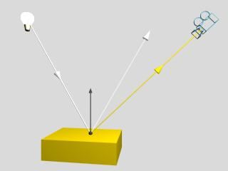

La llum incident a la superfície d'un objecte és parcialment reflectida i/o transmesa depenent de les característiques òptiques del material: opac, transparent o semitransparent. Aquesta reflexió/transmissió pot realitzar-se segons una direcció preferent, l'anomenada reflexió especular, o en totes les direccions que envolten el punt d'incidència per un igual, l'anomenada reflexió difosa. L'atenuació de la llum reflectida/transmesa respecte a la llum incident és funció de l'acabat superficial i pot afectar en diferent grau a les diferents ones de l'espectre de la llum incident. La reflexió especular és característica dels objectes brillants i dels miralls i, generalment, produeix una llum de color similar a la llum incident. La reflexió difosa és característica dels objectes mates (guix, roba). NOTA
|  |